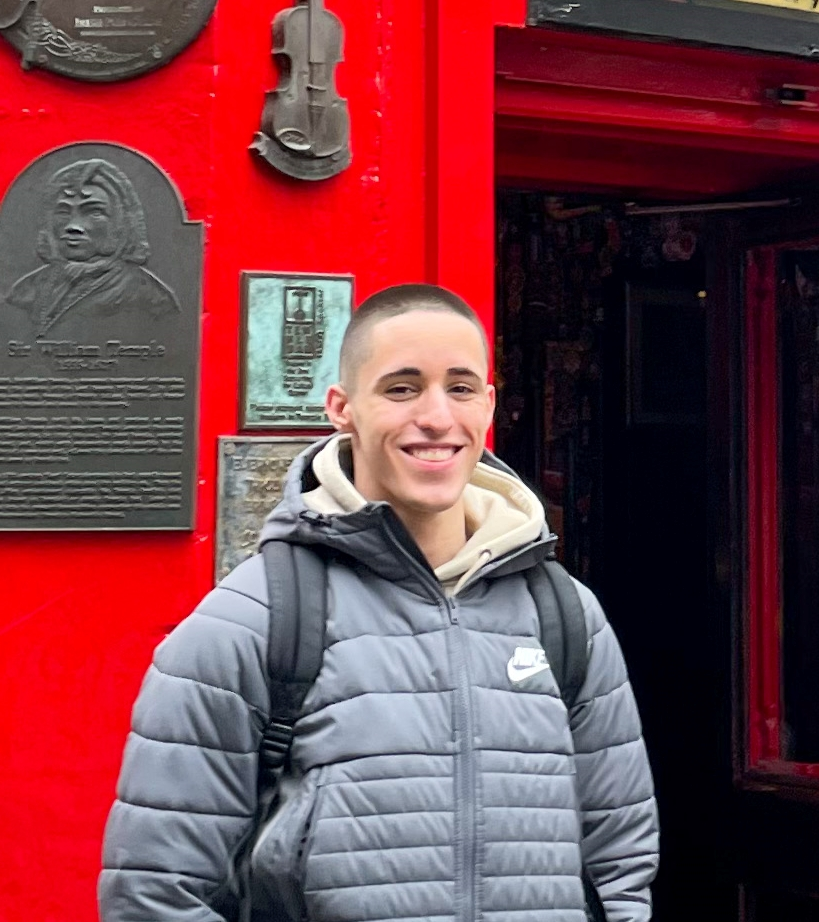

Diogo Melita
STUDENT, COMPUTER SCIENCE AND ENGINEERING
diogo@melita.pt diogo-melita | d-melita | dmelita.pt
Experience
Researcher
INESC-ID
Jan 2025 - Present
- Currently investigating an alternative approach for blockchain transaction reversals using Layer 2 systems to enhance scalability and dispute resolution.
- Developing models that balance immutability and controlled mutability to ensure blockchain integrity and user trust.
- Designing recovery protocols and blockchain patterns for resilience against transaction failures or intrusions.
Full Stack Developer - Fellowship
DSI - Instituto Superior Técnico
May 2023 - April 2024
- Had my first contact with production-level application development, working on a platform used by more than 10 000 users that allows the university’s community to create and submit standardized online forms.
- Developed 3 robust backend endpoints for the platform, enabling dynamic information processing within standardized forms.
- Designed 15 intuitive and user-friendly frontend interfaces, including a specialized form creation tool, allowing users to create forms tailored to their needs.
- Worked with a diverse team of 5 elements on a collaborative environment for brainstorming and idea exchange, to create user-friendly forms, improving the submission process for the university community.
Education
Master's Degree Computer Science and Engineering
Instituto Superior Técnico, Universidade de LisboaSep. 2023 - Present
Bsc. Computer Science and Engineering
Instituto Superior Técnico, Universidade de LisboaOct. 2020 - Jul. 2023 | Avg. 17/20
Certificates
Academic Merit
Diplomas for the 2021-2022 and 2022-2023 Academic yearsSkills
- Programming
- CC++JavaJavaScriptPythonSQLBashSolidity
- OSs
- Arch LinuxWindows
- Tools & Software
- GitDocker (& Docker Compose)VimLaTeXWeb3JS
Languages
European Portuguese - Native
English - B2
Hobbies
Futsal - AEIST
2023 - Present- Currently part of the Student’s Association futsal team of Técnico.
Futsal - Associação Frassati
2014-2020- Played as a member of the futsal team, fostering strong interpersonal relationships, teamwork, camaraderie among teammates, and developed leadership skills through captaincy and vice‑captaincy roles.
Scouts
2009 - 2018- Led scouting activities, organized events, and mentored younger scouts, developing leadership, responsibility, problem-solving, and decision-making skills through outdoor challenges.